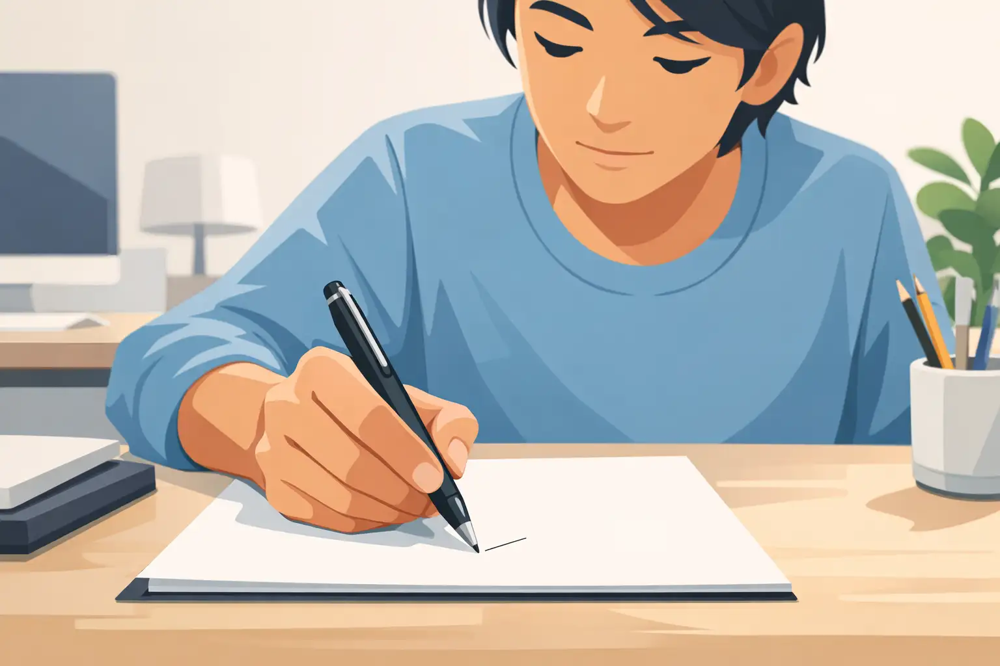
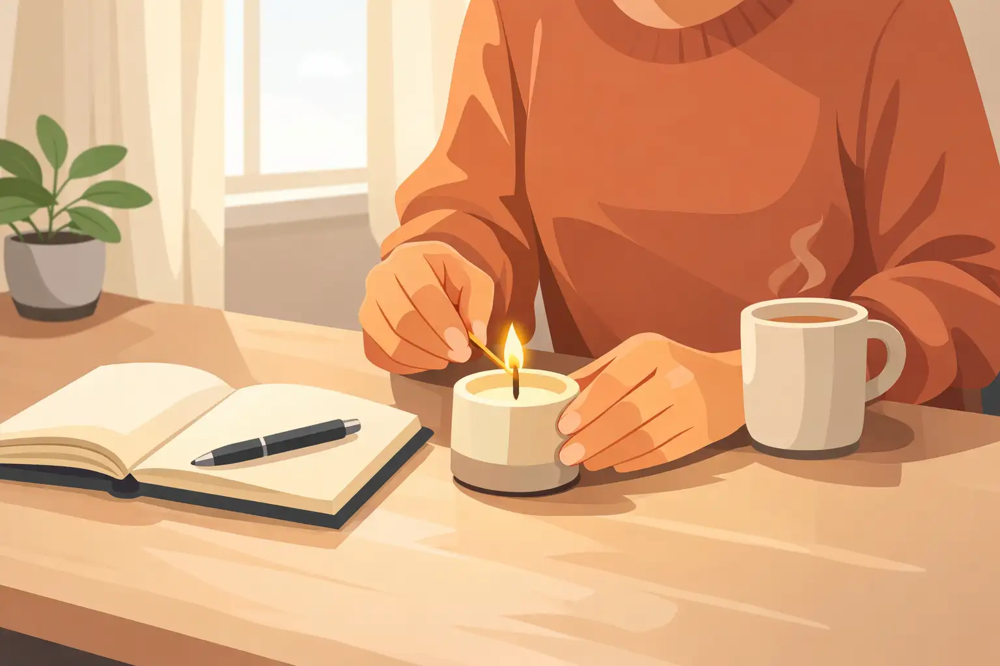
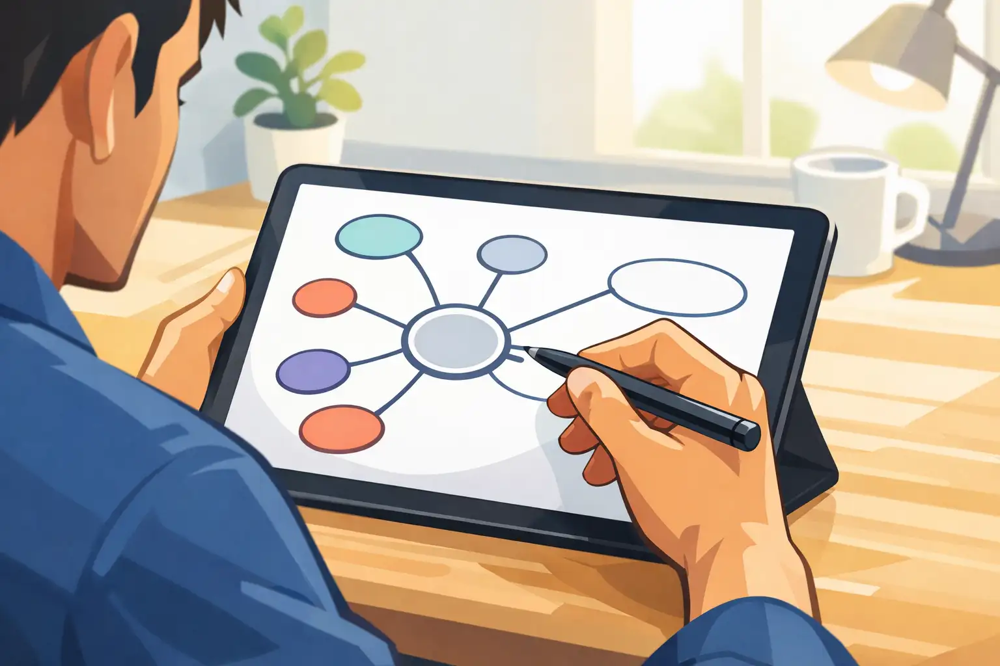
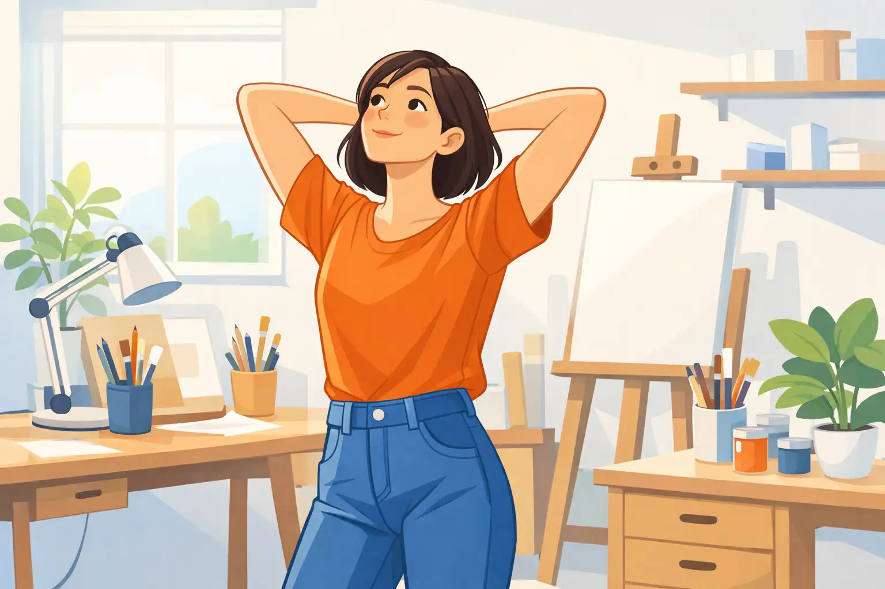
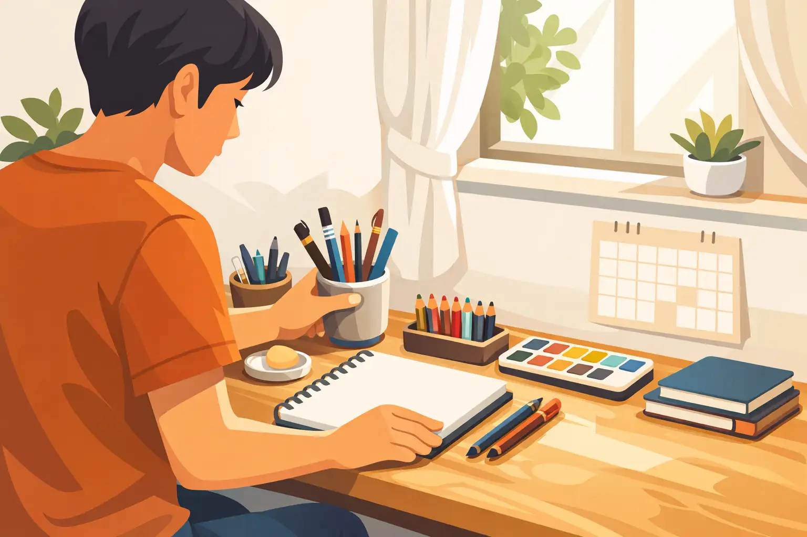

This lesson exposes the dangers of passively waiting for creative motivation and sets the foundation for taking control.

Many people believe that inspiration is a mysterious force that strikes when it wishes. This attitude leads to long stretches of inactivity and frustration, especially when nothing seems to spark that desired flow. The truth is, waiting for inspiration often keeps you stuck.
Instead, understand that inspiration can be summoned. The human brain is designed to make connections, but it needs prompts and movement to work best. When you take small actions, even when you don’t feel inspired, you actually signal your mind to start the creative process.
For example, a writer who only writes when 'inspired' may never finish their book, while a writer committed to a daily practice creates the space for inspiration to show up in the work. A common mistake is believing you need the spark before starting. In reality, the spark often appears only after you begin.
The next step is to rewire your thinking so you see creativity as active, not passive. In the next lesson, you’ll learn strategies to prime your mind for creativity—no waiting required.
What is the main risk of passively waiting for inspiration?
Learn proven methods to prepare your mind and body to experience creative momentum at will.

To command inspiration, you need to prime your mind, much like warming up before exercise. Creative rituals signal your brain that it's time to generate ideas. This could be as simple as lighting a candle, playing a favorite song, or writing a sentence in a notebook. Small, repeatable actions set the stage for flow.
Movement is another trigger. Taking a short walk or changing your physical environment can help break mental stagnation and stimulate fresh thinking. Many creators, from Einstein to modern artists, have used walking or environmental shifts to prompt their best ideas.
Lastly, keep a method for capturing fleeting ideas always at hand—a notebook, an app, or voice memo. The act of recording even minor inspiration tells your subconscious that you’re open and prepared for more.
A common mistake is ignoring the need for routine, expecting creativity to just appear. Instead, intentionally shape the conditions so your mind is ready. Next, you’ll discover how to connect these sparks of inspiration to a deeper sense of purpose.
What is one effective way to prepare yourself for creative work?
Discover how understanding your personal 'why' powers consistent creative energy and meaning.
When you know why you’re creating, your inspiration gains focus and depth. Purpose is your personal fuel—it’s what keeps you going when initial excitement fades. Without clarity about what matters to you, creative work can feel empty or forced.
A practical first step is to ask: 'What impact do I want to have? What excites me most about this project?' Write down your answers. For example, an entrepreneur might be driven by the urge to help others succeed, while an artist could be motivated by the desire to spark conversation. Aligning each action with these sources of drive keeps your creative energy robust.
A common pitfall is chasing trends or mimicking others without checking if the work resonates with your values. This usually leads to burnout or feeling uninspired. Instead, re-anchor your creative practice by reflecting on your motivations regularly.
The next step is using simple tools and prompts to trigger inspiration instantly, which you’ll learn in the following lesson.
What keeps creative energy flowing over the long term?
Get hands-on techniques and prompts for generating inspiration whenever you need it.

You no longer need to sit idly, waiting for inspiration. Certain tools and prompts reliably trigger new ideas. One productive tactic is asking open-ended questions like, 'What if I started with the ending?' or 'What happens if I reverse my process?' These questions interrupt your usual thinking and ignite curiosity.
Mind-mapping is another powerful method. Start with a central idea and branch out associations rapidly. This technique reveals overlooked possibilities and surprising themes. For instance, an entrepreneur brainstorming a new product can mind-map customer needs, emotions, and unlikely solutions.
Introducing random constraints—like limiting yourself to five words in a headline or switching mediums for an hour—often disrupts creative ruts. These boundaries force you to problem-solve and look at the challenge from new angles.
A common mistake is relying on a single prompt or tool over and over, which eventually loses effectiveness. Keep your toolbox varied and experiment with new techniques. Up next, you’ll learn to recognize and clear creative roadblocks in the moment.
Which method is NOT recommended for generating inspiration on demand?
Learn to spot and overcome the top obstacles that stifle creative flow.

Every creator faces blocks, but recognizing their true source is the first step to moving past them. The most common internal blocks are fear of failure, self-criticism, or the belief that your ideas aren’t good enough. By noticing these patterns, you can interrupt them before they take hold.
A rapid way to shift your mindset is through movement—stand up, stretch, or walk around. Physically changing your state can disrupt negative cycles. Alternatively, switch to a different, unrelated task for a few minutes to let your mind reset.
Reframing setbacks is essential. Instead of seeing a lack of progress as a failure, treat it as useful feedback. Perhaps it’s a signal to try a new approach or revisit your original purpose. Many creators mistakenly double down on methods that aren’t working, rather than stepping back and adjusting.
The key is to spot blocks early and use them as cues for positive action. In the final lesson, you’ll build habits for lifelong inspiration and creativity.
What is one effective way to move past a creative block?
Master the habits and routines that make on-demand inspiration part of your everyday life.

To maintain daily inspiration, you must treat creativity like a habit, not a rare event. Begin by setting up a consistent creative routine that fits your life, even if it’s just ten minutes a day. Over time, repetition wires your brain to expect and welcome inspiration during these blocks.
Track your progress in a visible way—a journal, calendar, or digital tracker. Recording both your successes and your stuck moments helps you spot trends and celebrate small victories. These regular reflections reinforce your commitment.
Getting support makes the journey easier. Sharing your goals in a creative community or with an accountability buddy keeps you engaged and counters feelings of isolation. A common trap is trying to go it alone and slipping back into inertia.
The next steps are to personalize these habits for your own interests and to keep tweaking your system as your goals evolve. With these foundations, you’ll find inspiration becomes a daily companion—not something you need to chase.
What daily practice supports ongoing creative inspiration?
Congratulations! You’ve learned how to reliably spark inspiration and lead a more creative, purpose-driven life. Go forth and command your creative spark each day.
Use the button below to take the next step, or start over and run through the course again.
Access lifelong daily audios. Free 7 day trial, no credit card requiredDownload the information in this course to keep and refer back to